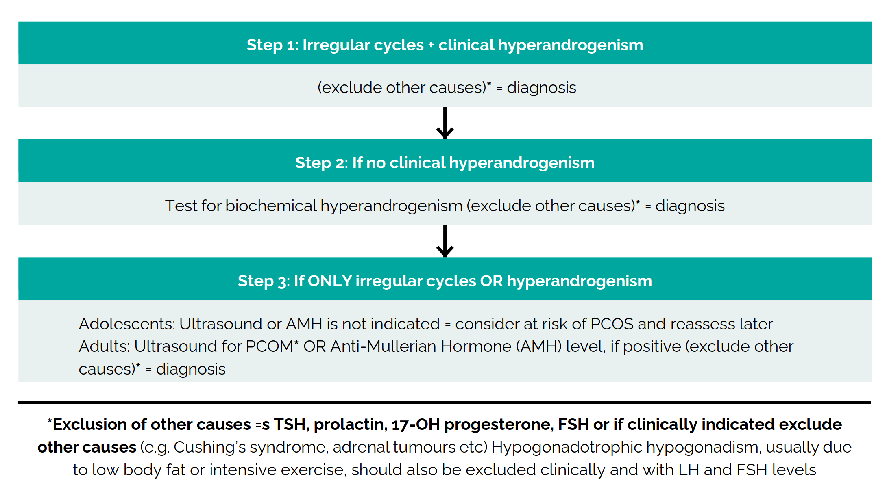

Polycystic ovary syndrome (PCOS) is a common medical condition in cisgender women. Typically regarded as an hormonal/reproductive disorder, its metabolic dimension is often overlooked. Misunderstood and inadequately managed in cisgender women, PCOS is also prevalent in transmasculine individuals, whose treatment presents some unique challenges. Even in transmasculine individuals without PCOS, this topic is relevant as it leads to misconceptions and allows us to discuss issues related to scientific research in transgender health. This article provides an overview of PCOS-related aspects in hormonal transition and among transmasculine people: prevalence, the causal relationship between testosterone treatment and PCOS, and the impact of PCOS on testosterone therapy.
This post is a translation of the article SOPK, personnes transmasculines & testostérone originally in French.
Translation by alix and biyokea, with help from the Aya-Expanse-32B multilingual open-weight LLM, run on local hardware.
From a diagnostic perspective, Polycystic Ovary Syndrome (PCOS) is defined by the presence of at least two of the following three criteria (The Rotterdam PCOS Consensus Workshop Group, 2004):
Combinations of these criteria allow classification into four phenotypes:
| Phenotype A | Phenotype B | Phenotype C | Phenotype D |
|---|---|---|---|
| hyperandrogenism | hyperandrogenism | hyperandrogenism | |
| oligo-/anovulation | oligo-/anovulation | oligo-/anovulation | |
| PCO morphology | PCO morphology | PCO morphology |
PCOS is also a diagnosis of exclusion, meaning that other possible causes must be ruled out first. These criteria are the most widely accepted, but they do not unanimously agree, either from a diagnostic or pathophysiological standpoint.
Indeed, PCOS is a misnomer (Norman et al., 2023): polycystic ovarian morphology is not an essential or even central element of PCOS. Conversely, clinical or biological hyperandrogenism appears to be an essential component of PCOS. Biological hyperandrogenism is the atypically high presence of androgens in women as measured in a blood test ; clinical hyperandrogenism refers to the visible effects of androgenic activity, like facial hair, in women, when they exceed what is considered typical for cisgender, non-intersex women. Insulin resistance is another fundamental aspect of PCOS from an endocrinometabolic perspective, yet severely underlooked. For more on this subject, see Unfer et al. (2024).
To summarize, it is important to understand that:
Lastly, while PCOS is classically defined only in women (and by extension, transmasculine individuals), a non-ovarian form of PCOS (“male PCOS” in cisgender men) characterized notably by the hyperandrogenic and metabolic aspects of classic PCOS, is beginning to be recognized in the scientific community (Di Guardo et al., 2020; Lafci et al., 2024; Mettawi, 2024). Transfeminine individuals can also be affected by PCOS, although this falls outside the scope of this article.
In cisgender women, PCOS is common—although it is not always diagnosed. Prevalence varies widely depending on various factors, including the diagnostic criteria used, but estimates range from 10-13% (The Rotterdam PCOS Consensus Workshop Group, 2004) and reaching as high as 20% in Europe and North America (Chiaffarino et al., 2022).
Though disputed today, for a long time it was believed that PCOS was more prevalent in trans men and transmasculine individuals than in cisgender women, particularly in the context of research into the etiologies of gender dysphoria: perhaps trans men are such because they were exposed to androgens prenatally, or maybe they have higher androgen levels than average, as is often the case in PCOS? These studies, aside from being deeply stigmatizing, pathologizing, and contradictory to values such as self-determination, are also simply inconclusive. For a critical review, see Levin et al. (2023).
This context is important to keep in mind when examining research on PCOS in transmasculine individuals, as it implies a research stance that, as always, is not neutral.
This context explains the abundance of studies examining PCOS prevalence in transmasculine individuals. The author conducted a systematic literature review (biyokea, 2025). Table 1 summarizes the studies providing information on PCOS prevalence in transmasculine people from the early 2000s to early 2025. A few studies published before the Rotterdam diagnostic criteria (2003) were excluded due to methodological reasons (non-standardized and outdated diagnostic criteria, convenience samples, very small sample sizes, etc.), as their value was considered minimal.
Table 1. Results of Systematic Literature Review of studies providing information on PCOS prevalence in transmasculine people
| Study | Country | Sample size | Study type | Diagnostic criteria | PCOS Prevalence | Control group ? | Distribution of Rotterdam phenotypes |
|---|---|---|---|---|---|---|---|
| (Mueller et al., 2008) | Germany | n=61 | Cross-sectional pre-HRT assessment | Rotterdam ; NIH 1990 | 14.8% ; 11.5% | ✅ ; No difference (94 cis women) | ❓ but similar to controls |
| (Vujovic et al., 2009) | Serbia | n=76 | Retrospective pre-HRT assessment | Rotterdam | 14.4% | ❌ | ❓ |
| (Baba et al., 2011) | Japan | n=238 | Retrospective pre-HRT assessment | Rotterdam ; NIH 1990 ; AES | 32% ; 17% ; 25.8% | ❌ | ❓ |
| (Auer et al., 2013) | Germany | n=131 | Retrospective pre-HRT assessment | AES (similar) | 2.3% | ❌ | ❓ |
| (Becerra-Fernández et al., 2014) | Spain | n=77 | Retrospective pre-HRT assessment | Rotterdam | 36.4% | ❌ | Oligo/anovulation: 64.3%; PCOM: 42.8%; Hirsutism: 15.8% |
| (Kutbay et al., 2017) | Turkey | n=48 | Retrospective pre-HRT assessment | ❓ | 16.3% | ❌ | ❓ |
| (Valentine et al., 2021) | United States | n=4177 | Retrospective | ❓ | OR 1.9 [95% CI: 1.3, 2.8] | ✅ 4 matched without dysphoria diagnosis | ❓ |
| (Yaish et al., 2021) | Israel | n=56 | Prospective pre-HRT assessment | Rotterdam | 48.2% | ❌ | PhA : 18% PhB : 70% PhC : 11% PhD : 0% |
| (Gezer et al., 2022) | Turkey | n=49 | Cross-sectional pre-HRT assessment | Rotterdam | 38.8% | ❌ | PhA : 26.3% PhB : 47.4% PhC : 15.8% PhD : 10.5% |
| (Vehmas et al., 2022) | Finland | n=104 | Retrospective pre-HRT assessment | ❓ | 1.9% | ❌ | ❓ |
| (Erel et al., 2023) | Turkey | n=70 | Cross-sectional pre-HRT assessment | Rotterdam | 22.9% | ✅ ; 11.7% 34 cis women | ❓ |
| (Oğuz et al., 2023) | Turkey | n=112 | Cross-sectionnal pre-HRT assessment | Rotterdam | 38.4% | ❌ | PhA : 20.9% PhB : 27.9% PhC : 46.5% PhD : 4.6% |
| (Rangi et al., 2024) | United States | n=105 | Retrospective pre-HRT assessment | Non-standard criteria (oligo/anovulation + hyperandrogenism) | 23.8% | ❌ | ❓ |
| (Calvar et al., 2025) | Argentina | n=346 | Retrospective pre-HRT assessment | Rotterdam | 26.6% | ❌ | PhA : 33.7% PhB : 39.1% PhC : 20.7% PhD : 6.5% |
| (Tordoff et al., 2025) | United States | n=2579 | Cross-sectional survey | Self-reported questionnaire | 10.7% | ❌ | ❓ |
These studies often, but not always, find a high prevalence of PCOS (typically based on the Rotterdam criteria) in transmasculine people, or at least higher than estimates in cisgender women. Numerous biases prevent concluding that PCOS prevalence is higher in transmasculine individuals, such as the absence of a control group, especially since PCOS prevalence, features, and attitudes towards care-seeking can vary significantly by geographical location, ethnicity, and other characteristics (Sendur & Yildiz, 2021; Teede et al., 2023; VanHise et al., 2023), or the retrospective nature of the studies: excluding Valentine et al. (2021) and Tordoff et al. (2025), which were not designed with systematic PCOS screening in mind, two-thirds are retrospective studies, with the remaining one-third being cross-sectional.
However, it is important to note some strengths: compared to older studies, most of the studies presented here use well-defined diagnostic criteria and decent sample sizes, even if they only examine individuals seeking hormone therapy.
Two somewhat different studies stand out: Valentine et al. (2021), a retrospective case-control study on a large pediatric database in the United States, and Tordoff et al. (2025), a questionnaire-based analysis from the PRIDE cohort. Valentine et al. does not provide PCOS prevalence among young people with gender dysphoria but indicates it is 1.9 times higher than matched controls. However, control matching did not account for many important covariates, and a strong bias of overdiagnosis in transmasculine youth is likely, rendering this figure ultimately uninformative. For example, cisgender young women will only be diagnosed with PCOS if they report symptoms, whereas many individuals with gender dysphoria seeking hormone therapy will undergo pre-HRT screening and thus have a higher chance of being diagnosed with PCOS. On the other hand, Tordoff et al. reports a PCOS prevalence of 10.7% among 2579 transmasculine individuals, similar to cisgender women, based on self-reported diagnoses, which includes diagnostic rates rather than just prevalence itself.
In conclusion: - Outdated, methodologically weak studies in a stigmatizing etiological research context found PCOS prevalences in transmasculine individuals much higher than in cisgender women. - More recent and less methodologically flawed studies yield mixed results, suggesting PCOS prevalence in transmasculine people sometimes comparable to cisgender women and sometimes higher. - Methodological limitations prevent a definitive conclusion, beyond a simple “transmasculine individuals may have a higher PCOS prevalence than cisgender women,” despite a substantial number of studies—highlighting the issues with research priorities in transgender health.
One of the main findings of the systematic review is the surprisingly high number of studies assessing PCOS prevalence in transmasculine individuals—especially when compared to the absence of studies examining the impact of HRT on those with concomitant PCOS; and their respective low quality. As usual, cisgender researchers study transgender people to understand what makes them transgender (with the very real possibility that these results may be used to restrict who is “allowed” to be transgender), but they do not seem concerned about data that could be useful to the marginalized populations they study.
Almost all of these studies focus on mandatory assessments for individuals seeking HRT—primarily in dedicated transgender healthcare centers where participation in such studies is not truly optional. This raises ethical concerns, especially for studies that will not benefit other transgender people.
Indeed, it is important to note that participating in these studies offers no benefits to the transgender individuals involved, neither personally nor from a broader perspective given the overall lack of utility of these studies. On the contrary, it imposes unnecessary and sometimes invasive examinations such as pelvic ultrasounds or body hair assessments. Of note, those examinations are part of a long-standing tradition of excluding intersex people from institutionalized transgender healthcare.
Earlier, I mentioned that these studies were primarily conducted in the context of etiological research that does not benefit the individuals under study. However, while this context persists, more recent studies focus on cardiometabolic risk factors, highlighting that transmasculine individuals seeking HRT often have unfavorable and/or less favorable cardiometabolic risk factors compared to cisgender women in the general population—and this is even more pronounced for those with PCOS. While this information is not entirely irrelevant, it is not particularly useful either. Transgender people in general face numerous cardiometabolic risk factors, likely primarily due to their socio-economic precariousness and the consequences of minority stress (Diamond et al., 2021; Flentje et al., 2025; Streed et al., 2021). Framing PCOS as the sole (or even main) determinant of these risk factors is politically counterproductive, essentializing the health consequences of experienced discrimination. Furthermore, these risk factors are easily measurable, and given the focus on hormone treatments, a genuine preventive approach to transgender health would benefit more from studies on the impact of PCOS on testosterone therapy than from studies on pre-testosterone health status.
It is sometimes claimed that testosterone therapy in transmasculine individuals “causes” PCOS or a condition similar to PCOS—an intuitive idea given the common conception of PCOS as, roughly speaking, an excess of testosterone. However, this is not accurate: PCOS extends far beyond high testosterone levels, and its pathophysiology is complex. It is now well established that testosterone therapy and PCOS are two distinct situations.
We can examine two main aspects: metabolic changes and reproductive system modifications.
PCOS is characterized, among other things, by a rather specific metabolic profile marked notably by insulin resistance issues (Unfer et al., 2024). The metabolic profile of cis women with PCOS differs from transmasculine individuals on testosterone therapy, whose metabolic profile generally resembles that of typical cisgender men.
These patterns were examined in Cupisti et al. (2010)’s cohort study. This study investigates insulin resistance and lipid parameters in transmasculine individuals (pre-testosterone and at 1 year of testosterone treatment, n=29) compared to cisgender women with PCOS. The authors found that testosterone therapy did not influence insulin resistance and while lipid parameters changed with testosterone, they resulted in a different profile from cisgender women with PCOS.
On the same topic, Chan et al. (2018)’s retrospective analysis examines the evolution of metabolic profiles (HbA1c and lipids) in transmasculine individuals (n=34) during their testosterone treatment over 6 years, compared to typical female (with or without PCOS) and male profiles. The authors found that the metabolic profile of individuals on testosterone evolved towards a typical male profile rather than a female PCOS profile.
These studies are interesting in their direct comparisons between testosterone therapy and PCOS but remain limited, particularly in sample size. A recent meta-analysis by Tienforti et al. (2024) focusing on the metabolic aspects of transmasculine individuals on testosterone (BMI, waist-to-hip ratio, body composition, lipid and glycemic profiles) provides a robust global overview of the subject and clearly demonstrates metabolic changes aligning with typical male values rather than PCOS-associated ones.
PCOS is also characterized by a specific ovarian morphology (polycystic morphology), referred to as PCOM: polycystic ovarian morphology. This PCO morphology is not, despite its name, simply defined by the presence of multiple ovarian cysts.
The “cysts” in PCOS are not true cysts; they are actually follicles (ovarian structures that secrete hormones and contain an oocyte) whose development was prematurely halted and instead of disappearing (through follicular atresia), they accumulate, forming a structure resembling numerous small cysts (Balen et al., 2003; Chang & Cook-Andersen, 2013; Witchel et al., 2019).
In the Rotterdam criteria (2004), PCO morphology is defined by the presence of at least 12 follicles measuring 2-9 mm in diameter per ovary and/or significant ovarian volume (≥10 mL) on ultrasound.
The appearance (echogenicity, volume, density) of the ovarian stroma (ovarian connective tissue) is mentioned as one of the characteristics of PCO morphology but is not required for diagnosis; ovarian volume being a good substitute (Balen et al., 2003).
Today, due to improved ultrasound techniques, counting follicles (or measuring AMH, see below) is preferred, defining PCO morphology starting from 20 follicles per ovary (Teede et al., 2023). These new criteria emphasize that PCO morphology is common and, on its own, does not indicate PCOS. This morphology is particularly frequent in younger individuals (60% of those aged 25-30 (Johnstone et al., 2010) and higher still in adolescents) and when using a lower threshold than 20 follicles. Sometimes multicystic ovaries are mentioned for a significant but smaller number of follicles, generally slightly larger than in polycystic ovaries, with a more typical stromal appearance (Balen et al., 2003).
As this morphology, which was more strongly associated with PCOS in the past, is partially linked to androgens (see inset below), both in PCOS and in many animal models, it was long believed that testosterone therapy inevitably induced PCO morphology in transmasculine individuals.
Follicles develop in cycles, continuously. Initially, multiple follicles start to grow, progressing from the primordial to primary, then secondary, and finally tertiary stages. At this point, the majority of the developing follicle group undergoes follicular atresia, and the remaining few continue as antral follicles. Gradually, all but one follicle undergo atresia; this dominant follicle rapidly develops into the pre-ovulatory follicle, releases its oocyte (ovulation), becomes a corpus luteum, and then dies (Cox & Takov, 2025).
This process (folliculogenesis) is regulated by complex hormonal mechanisms that can dysfunction. It is generally hypothesized that excess androgens can stimulate and block the development of follicles early in their life cycle (antral and pre-antral stages), leading to an accumulation of follicles that results in PCO morphology (Chang & Cook-Andersen, 2013). However, many other factors are also at play. For instance, PCO morphology is also found in specific PCOS subtypes without androgen excess, suggesting a different mechanism (Unfer et al., 2024).This idea has only been confirmed by older studies, suffering from methodological flaws similar to those in prevalence studies: small samples, lack of control groups, variable and imprecise definitions, etc.
A recent systematic review examining the ovaries (morphology, histopathology) of transmasculine individuals on testosterone therapy (11 studies, 410 patients, 765 ovaries) found polycystic-appearing ovaries in ~35% of individuals—a proportion similar to the general population (Toland et al., 2024).
Additionally, results from studies with better methodology do not support the findings of these older studies. For instance, Ikeda et al. (2013) compared the ovaries of 11 transmasculine individuals on testosterone and control cisgender women, all without PCOS on histopathological grounds, and found histological changes similar to PCOS but no PCO morphology (according to Rotterdam criteria). The ovaries of individuals on testosterone had a thicker ovarian cortex and stromal hyperplasia, but the number of follicles (in early development and antral stage) was similar to controls. Subsequent studies draw similar conclusions, finding similar rates of PCO morphology in individuals on testosterone and controls. For a review, see the Reproductive Health Considerations section of Kumar et al. (2022, pp. 638–639).
In addition to typical ovarian morphology, PCOS is associated with elevated AMH (anti-Müllerian hormone) levels, which are sometimes used to aid in PCOS diagnosis and can be a diagnostic marker for PCO morphology (instead of ovarian volume/follicle count by ultrasound) (Dumont et al., 2015; Johnstone et al., 2010). This elevation may be linked to the frequently observed high androgen levels in PCOS. However, these findings once again do not extrapolate to transmasculine individuals on testosterone. There are few studies examining AMH changes with testosterone therapy, but results vary between a significant decrease in AMH and little to no impact—with no increase observed (Yaish et al., 2021).
The subtleties that may explain these observations are not well understood; there might be a threshold effect accounting for a different impact between moderately elevated testosterone levels (PCOS) and very high levels (testosterone therapy). There could also be specificities, distinct from simple androgenic activity, unique to PCOS. Thus, a prospective study assessing AMH levels in individuals starting testosterone found a slight decrease in AMH at 1 year of treatment. Upon subgroup analysis, the authors found that AMH levels decreased only in transmasculine individuals with PCOS (diagnosed before HRT) and did not change in others (Yaish et al., 2021).
In any case, these observations reinforce the idea that ovarian changes under testosterone therapy differ from those seen in PCOS.
Another characteristic of PCOS is the frequent presence of a thick endometrium (>7mm) due to chronic anovulation, which chronically exposes the endometrium to estrogen action without progesterone opposition (Unfer et al., 2024). This anovulation is often associated with atypically high androgen levels. This increased endometrial thickness is a risk factor for endometrial hyperplasia and a possible explanation for the association between PCOS and an elevated risk of endometrial cancer.
Once again, the situation in individuals on testosterone is very different. The endometrial thickness of individuals on testosterone is lower than that of controls (Asseler et al., 2022), and endometrial hyperplasia is rare (Toland et al., 2024). Furthermore, there does not appear to be an increased risk of endometrial cancer in individuals on testosterone (Vestering et al., 2025), although more data are still needed.
The results presented above (metabolic changes) are not surprising: a shift towards a typical male profile under testosterone therapy (or female under estrogen) is nearly ubiquitous across a vast array of physiological parameters, ranging from common blood tests (Nolan & Cheung, 2025) to DNA methylation (Shepherd et al., 2022) and the fecal metagenome (Liwinski et al., 2024) (when differences exist between profiles, they are far from systematic).
Nevertheless, there is an insistence on comparing trans men to women and trans women to men; be it through constant comparisons between testosterone therapy and PCOS in scientific literature, especially when assessing HRT risks despite their lack of connection, or by calculating the breast cancer risk in trans women compared to cis men, rather than cis women, which yields seemingly alarmingly, yet not necessarily representative, elevated rates.
This comparison seems to stem from the underlying assumption that gender identity, emerging from both intimate experience and social construction, is merely ornamental. In this covertly transphobic framework, trans people are understood to change their gender but not their sex, contrasting with sex as a biological and supposedly fixed category, which is considered the primary variable in medicine. Thus, trans men and transmasculine individuals on HRT are framed as women taking testosterone. Given that PCOS is often understood through the lens of androgens, it is assumed that these two situations share many similarities, although this is not the case. PCOS is characterized by much more than androgens; they play a role in its pathophysiology without being definitively identified as the cause. Testosterone levels in PCOS and during testosterone therapy are vastly different. Furthermore, the psychological context and socioeconomic implications bear little resemblance between transmasculine individuals and cis women with PCOS—a distinction that is rarely, if ever, mentioned or accounted for.
The unsuitability of those PCOS/testosterone HRT comparaisons is even more striking considering others, better suited comparaisons could be drawn. For instance, compairing with hypogondal cis men who take testosterone, or with transmasculine people who do not take HRT. Those alternatives would eliminate variables related to PCOS itself and make feature like testosterone levels or psychosocial contexts more comparable. However, these comparisons are rarely made in the scientific litterature. I believe this stems from researchers too often perceiving trans people as belonging to their assigned sex first and foremost.
This transphobic bias underlying these comparisons has tangible effects: beyond constantly reminding trans individuals of their past gender assignment, fostering a hostile environment, these comparisons lead to premature conclusions, sometimes alarmist and often lacking nuance. They contribute nothing to research and instead create blind spots detrimental to trans people’s health. For instance, if one assumes that testosterone is not suitable for a “female” body (transmasculine), one might attribute all cardiovascular issues in transmasculine individuals on HRT solely to testosterone, neglecting the impact of minority stress. Conversely, if estrogens are considered fundamentally incompatible with “male” bodies (transfeminine), one may wish to blame estrogen itself for health issues like osteoporosis in transfeminine individuals without considering they might be consequences of the underdosing they are frequently subjected to.
After extensively discussing transmasculine individuals without PCOS (who, as we’ve seen, will not develop it due to testosterone therapy), it’s time to address the topic of those with PCOS who wish to take testosterone.
PCOS is by no means a contraindication for testosterone therapy.
If PCOS is suspected, it is advisable to establish the diagnosis before starting testosterone (which can complicate or prevent future diagnosis). However, diagnosing PCOS should not delay the initiation of hormone therapy.
In line with 2023 international recommendations (Teede et al., 2023), clinical assessment and blood tests are sufficient for diagnosis (TT, E2, LH, FSH, FBC, FPG, lipid panel, LFT), and serve as a pre-HRT health assessment and diagnostic tool for PCOS. AMH levels can be used in place of follicle counting to avoid pelvic ultrasound (usually transvaginal), as alternatives to gynecological examinations should be prioritized when possible for transmasculine individuals, who often find them distressing.
 Diagnostic pathway taken from Teede et al. (2023, p. G60). Consult the original for further details.
Additionally, PCOS does not require dosage adjustments from standard testosterone therapy protocols. Elevated androgen levels pre-HRT are not always present, and when they are, they remain negligible compared to typical target levels under testosterone therapy. As a result, one can simply start with a standard dosage and adjust it based on blood test results and subjective experience.
PCOS is associated with an increased risk of certain health issues, and testosterone therapy can influence these risks.
PCOS is linked to various cardiovascular risk factors (insulin resistance, diabetes, dyslipidemia) and a higher risk of cardiovascular diseases. It is recommended to conduct a glycemic and lipid profile at the time of diagnosis and to monitor glycemic status (ideally with OGTT, otherwise HbA1c + FPG) every 1-3 years.
Testosterone therapy in transmasculine individuals is frequently associated with some of these cardiovascular risk factors, and sometimes, but not always, with an increased risk or mortality from cardiovascular diseases. It should be noted that the causality of this relationship is far from established. Factors such as minority stress may also contribute, and studies on trans individuals show a higher risk compared to cis individuals, but not compared to trans individuals not on HRT (Glintborg et al., 2022; Karalexi et al., 2022), suggesting a role for trans-specific factors (socioeconomic precariousness, minority stress, etc.) rather than HRT.
From the perspective of lipids, testosterone appears to have a slightly unfavorable effect. Regarding insulin resistance, testosterone seems to have a mildly beneficial effect (Tienforti et al., 2024).
The interaction between the effects of PCOS and testosterone therapy, which operate through different mechanisms, is barely understood. However, encouragingly, a recent retrospective analysis of transmasculine individuals with or without PCOS starting testosterone found no greater cardiovascular risk factor changes in those with PCOS (McNeil et al., 2024).
It is plausible that testosterone has a positive, or at least neutral, effect on insulin resistance in PCOS, but data are severely lacking. Therefore, it seems reasonable to simply follow the monitoring recommendations for cis women with PCOS (glycemic status surveillance), adjusted according to clinical presentation, in line with Fenway Health (Thompson et al., 2021) and UCSF guidelines (Deutsch, 2016).
As mentioned earlier, PCOS is often associated with a thick endometrium, a risk factor for endometrial hyperplasia and cancer. Since the absolute risk of endometrial cancer remains low, systematic screening is not recommended for cis women with PCOS. However, information and prevention measures are advised. In cis women with PCOS, ovulation problems are considered responsible for endometrial thickening: chronic anovulation alters the menstrual cycle, leading to prolonged exposure of the endometrium to estrogen action without progesterone opposition. Progesterone typically prevents endometrial proliferation. Chronic amenorrhea (absence of periods) is a marker of this process.
Similarly, it was often assumed that transmasculine individuals taking testosterone were at higher risk of endometrial cancer. It was hypothesized that the estradiol into which some of the administered testosterone metabolizes could cause endometrial proliferation, or that the androgenic action of testosterone itself might be directly responsible. However, more recent data are reassuring: androgen activity on the endometrium is complex but tends to be antiproliferative (Gjorgoska & Rizner, 2022), and in transmasculine individuals on testosterone, the endometrium thins (Asseler et al., 2022) and is rarely hyperplastic (Toland et al., 2024). Additionally, there does not appear to be an increased risk of endometrial cancer with testosterone therapy, whether in postmenopausal cis women or transmasculine individuals (Vestering et al., 2025), although data remain limited. Therefore, it is conceivable that testosterone has a positive or at least neutral effect on the risk of endometrial cancer associated with PCOS. Thus, no specific monitoring seems necessary.
In cis women, it is now recognized that PCOS is associated with poorer mental health: depression, anxiety, body image issues, eating disorders, and more (Teede et al., 2023). This phenomenon cannot be disconnected from the gendered pressures and fatphobia cis women with PCOS commonly face.
Given its intimate link to gender experience, it is unsurprising that transmasculine individuals’ lived experiences (and those of trans and queer people in general) may differ. For example, certain aspects like increased androgen presence or amenorrhea are often welcomed by transmasculine individuals, although individual experiences vary (Wugalter et al., 2024). A study comparing transmasculine individuals with and without PCOS before HRT observed less gender dysphoria, better body image, and higher quality of life in those with PCOS (Gezer et al., 2022). While data are severely lacking, it seems plausible that PCOS has positive effects on the mental health of transmasculine individuals (especially pre-/non-HRT), contrasting with cis women. However, PCOS likely remains associated with negative effects, particularly due to additional discrimination and barriers encountered.
In any case, it is established that trans people’s mental health tends to be poorer than cis individuals’, especially due to minority stress and discrimination. These factors should be considered in trans individuals with PCOS, and efforts should be made to avoid exacerbating them, particularly through fatphobic behaviors.
PCOS can impact fertility, primarily by causing ovulation problems but also by being associated with more complications during pregnancy (miscarriage, gestational diabetes, pre-eclampsia, etc.). The effects of testosterone on transmasculine individuals’ fertility are varied and still not well understood, but current data are reassuring. For a comprehensive review, see De Roo et al. (2025).
Data on the fertility of transmasculine individuals with PCOS on testosterone are even more limited. Studies often do not include information on whether participants have PCOS. One study mentioned earlier examining ovarian reserve markers in transmasculine individuals on testosterone, with or without PCOS, found a slight decrease in AMH levels with testosterone only in those with PCOS (Yaish et al., 2021). A similar (but non-significant) trend was identified for follicle count. Both markers remained within normal ranges even in individuals with PCOS. The authors hypothesize that the greater decline in ovarian reserve in PCOS may be due to pre-testosterone differences or that testosterone has a different impact on those with a deregulated hypothalamic-pituitary-gonadal axis. They note that the duration of testosterone therapy does not seem to affect ovarian reserve, except possibly slightly in individuals with PCOS.
Beyond these reassuring but limited data, the mechanisms of action on fertility differ between PCOS and testosterone in the context of HRT. There do not appear to be particular concerns regarding the fertility of individuals with PCOS who take testosterone (beyond the standard impact of PCOS and testosterone separately).
If the use of one’s own gametes is desired, especially long-term, fertility preservation (egg freezing) should be considered before or within a few years of starting testosterone. Parental planning will typically need to be accompanied by discontinuing testosterone—although this recommendation is being challenged (Pfeffer et al., 2023), and by receiving similar management to cis women with PCOS (treating anovulation and preventing complications).
Not much specific action is required, but here are some helpful points to know: